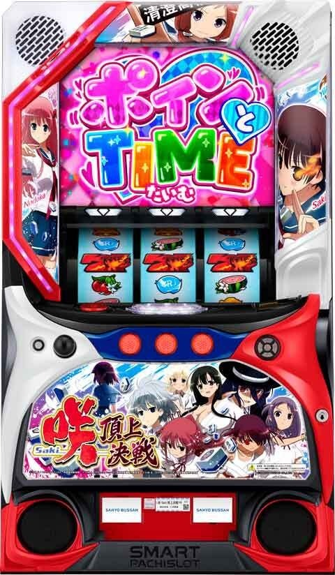
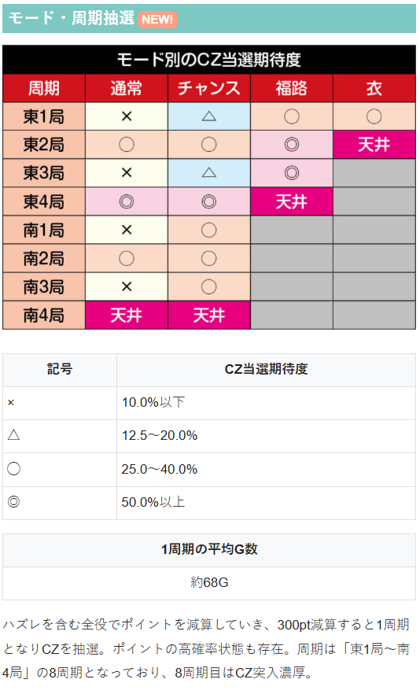
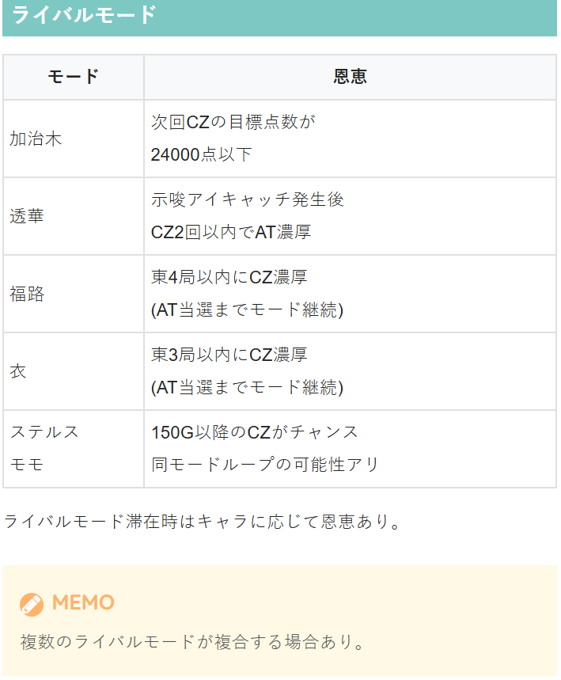
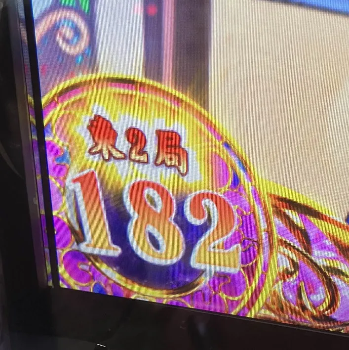
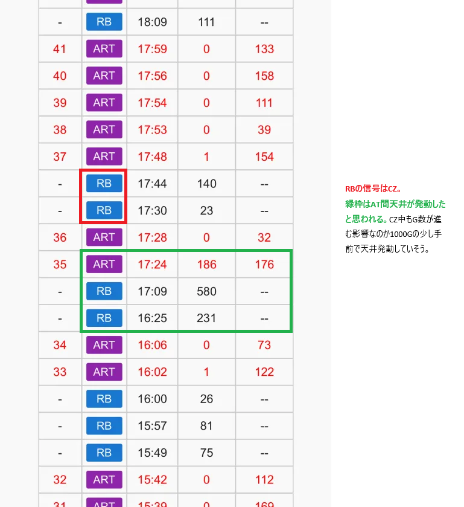
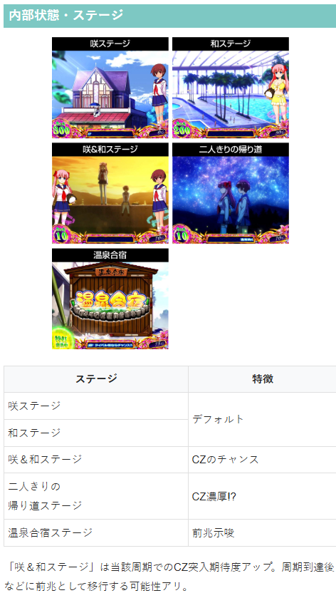
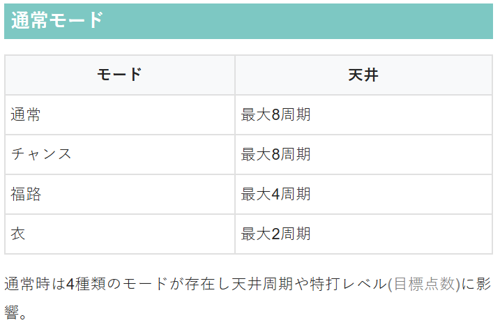
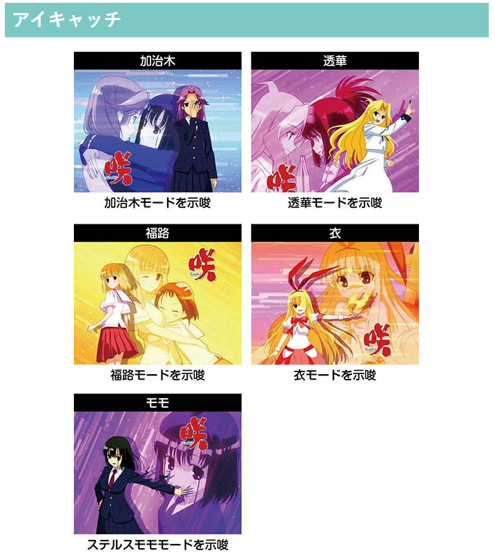
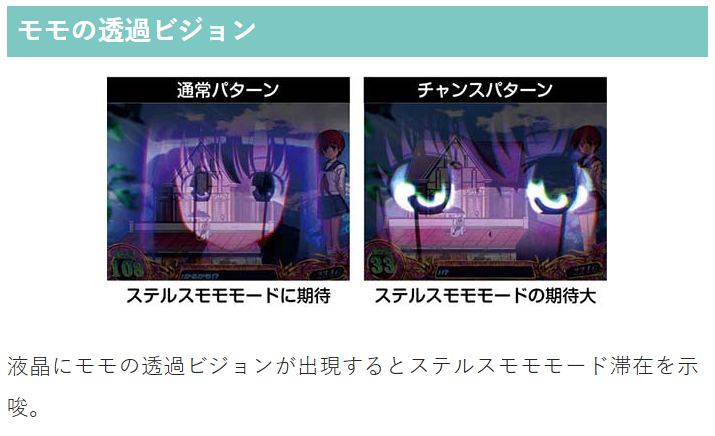
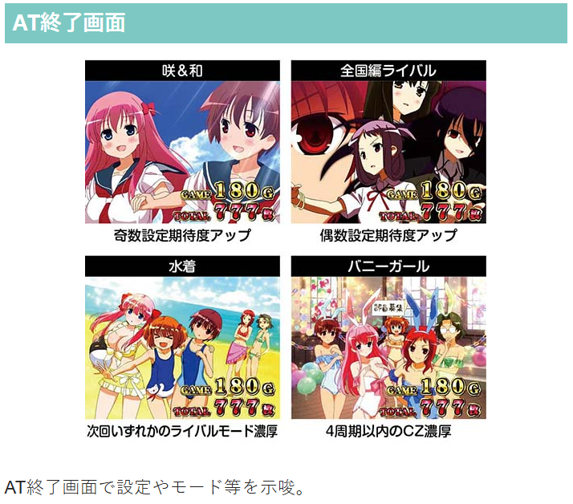

咲‐Saki‐ 頂上決戦

【天井情報】
通常時を最大1000G＋αを消化でATに当選。
設定変更時は最大600G+αに短縮。
CZ本前兆中に天井到達の場合は、CZをストック。
AT中駆け抜け(麻雀激闘に1度も勝利できず)後は天井が800G＋αに短縮。
周期天井
最大8周期到達でCZ当選。
東1局からスタートし、周期のたびに1局づつ進み南4局目で必ずCZに当選。
CZ「特打」を最大6スルー後、7回目で成功濃厚のCZへ。
【リセット判別】
不明
【有利区間について】
エンディング到達で有利区間がリセットされ、「スペシャルのどっちジャッジ」で獲得した特化ゾーンからATがスタート。
※周期抽選タイプのため、期待値表鵜呑みは危険。ポイント残り300ptと10ptで狙い目がかなり変わってくると思われる。
狙い目
【リセット狙い】
230Gから（ポイント残り300pt想定）
【ゲーム数天井狙い】
※ライバルモードや南3局以降等、次回のCZ当選が近い状況なら各自ボーダーを150G下げる。
※狙い目のボーダーは状況が悪いケースの狙い目。実際は悪い状況で落ちている事が多いと思われる。
駆け抜け後以外
630Gから（ポイント残り300pt想定）
駆け抜け後
490Gから（ポイント残り300pt想定）
※ART1粒だけの場合が駆け抜けと思われる。2粒も恐らく駆け抜け？
【周期別天井狙い】
東1局 AT後250ptから CZ後50ptから
東2局 150ptから
東3局 50ptから
東4局 200ptから
南1局 狙えない
南2局 100ptから
南3局 周期天井を視野に200ptから
南4局 周期天井になるため300ptから
※公式発表の各周期でのCZ当選期待度から想定した狙い目です。
※ライバルモードや示唆が無い状態を想定での狙い目となるため、プラス要素があればボーダーを下げる感じです。

【ライバルモード狙い】
AT終了画面が水着の場合は何かしらのライバルモードに滞在している。AT終了後CZ当選まではメニューで終了画面が確認出来る。
AT即やめ台で画面が水着の場合は1周期（東1局）だけ回して、ライバルモードの示唆で押し引きする感じ？
どのライバルモードか判断つかない場合は東1局消化してやめておくのが無難？
各ライバルモードの狙い目（暫定）
加治木 AT後東1局（CZ後除く）、東4局はPT消化し前兆確認まで。南3局以降はCZ当選まで。
透華 AT後東1局（CZ後除く）、東4局はPT消化し前兆確認まで。南3局以降CZ当選まで。CZからAT非当選時はAT当選まで。
福路 東3局以降CZ当選まで。東2局での当選もあるため、積極派は東2局から？
衣 東2局以降CZ当選まで。
ステルスモモ 150G以降のCZでAT非当選となるまで？
ライバルモード複合時は少し強気に攻める感じ？（透華+福路or衣ならAT当選まで、加治木+福路or衣ならボーダーを1局下げるなど）

【有利区間関連狙い】
差枚+2300枚前後で有利切れ？差枚+2300枚前後でART2Gの履歴があるため有利切れの信号？
AT終了後1周期目が強い事を考慮すると差枚+1500枚以上なら1周期消化するのはあり？差枚+1800枚以上なら慎重派でも1周期は打った方が良さそう？
【示唆等での押し引き】
基本的に東1局のみ周期数の部分が光っているが、それ以外でも光っているケースがある（下記画像は東2局で光っている）。この場合は当該の周期でCZ当選が期待できるため、残りPT不問で消化して良さそう？

やめ時
AT終了後にヤメ or 1周期消化してヤメ(暫定)。
AT後の1周期目まで消化した場合の機械割は約102%!?
その他
履歴






参考元
基本情報
- メーカー: 三洋
- 機械割: 97.6% 〜 114.9%
- 導入開始日: 2025年08月04日（月）
- ゲーム性概要: ●通常時は規定ポイントを減算することでCZ抽選をおこなう周期抽選タイプ ●AT当選のメイン契機はCZ ●AT「頂上決戦」は純増約4.5枚/Gのゲーム数管理型 ●AT中は麻雀激闘勝利で上乗せor特化ゾーンを獲得 ●報酬の一部で突入するおーるすたぁラッシュはボーナスとのループ型AT ●おーるすたぁラッシュ終了後は頂上決戦へ復帰


打ち方
打ち方・小役
左リールBAR狙い（小役狙い）
「最初に狙う絵柄」 左リールにBARを狙う。スイカが上段までスベった時以外、中＆右リールはフリー打ちでOKだ。

「スイカ停止時」 中リールに赤7 or BARを目安にスイカを狙う。右リールはこぼしがないのでフリー打ちでOK。

「小役の停止形」

左リール白7狙い（小役狙い）
「最初に狙う絵柄」 小役1確目を出せるので、CZ中など、小役揃いが重要となる場面では左リール枠上白7狙いもオススメだ。

「スイカ上＆中段停止時」 下段ベル（共通1枚ベル）orスイカorチャンス目。中リールにスイカを狙い、右リールはフリー打ちでOK。

「白7中段停止時」 弱チェリーor強チェリーorリプレイ。 リプレイ否定でチェリー。出目では弱チェリーと強チェリーを判別できないため、第3停止後の効果音やリールバックライトフラッシュの強弱等で判別しよう。

「白7下段停止時」 ハズレ（1枚役）orリプレイor上段ベル（共通or押し順ベル）orチャンス目。 小Vベル停止でチャンス目。

変則押しはNG

通常時は左リール第1停止での消化を推奨する。
押し順ナビの発生箇所＆発生確率
| 状態 | 発生の有無・確率 |
|---|---|
| 通常時 | ナビなし |
| 特打中 | 一度だけ発生 |
| 地獄の特打中 | 1/4でナビ発生 |
| 特打後のジャッジ中 | ナビなし |
| ポインとタイム（親番） | 1/4でナビ発生 |
| AT準備中 | ほぼナビなし |
| AT中 | ナビあり |
| 麻雀激闘中 | 1/4でナビ発生 |
| 報酬ジャッジ中 | ナビなし |
| おーるすたぁラッシュ中 | ナビあり |
| 花咲ゾーン中 | 1/4でナビ発生 |
| 嶺上開花ボーナス中 | ナビあり |
| スペシャルのどっちジャッジ中 | ナビなし |
| 宮永照覚醒中 | 1/4でナビ発生 |
特打中の押し順ナビ発生は一度だけだが、地獄の特打ではベル成立時の1/4で押し順が発生するため、クリア期待度がアップ。 AT中はもちろんフルナビで、特化ゾーン中などはナビ発生率が低下する。
解析情報通常時
小役関連
小役確率
| 役 | 確率 |
|---|---|
| ハズレ（1枚役含む） | 1/1.3 |
| リプレイ | 1/9.1 |
| 押し順ベル | 1/2.1 |
| 上段7枚ベル | 1/25.2 |
| 下段or右下がり1枚ベル | 1/17.8 |
| 弱チェリー | 1/66.2 |
| 強チェリー | 1/385.5 |
| スイカ | 1/100.1 |
| チャンス目 | 1/250.1 |
| 小役揃い合算 | 1/4.2 |
| レア役合算 | 1/31.6 |
上段7枚ベルは上段揃いの共通7枚ベルと押し順ベルの一部で揃うベルの合算値で、上段7枚の共通ベル確率は1/99.9。通常時は判別できないが、AT中はナビなしの上段ベル＝共通7枚ベルになる。
モード
ライバルモード性能
| モード | 恩恵 |
|---|---|
| 加治木モード | 次回CZの規定点数32000点を否定 （24000点or16000点） |
| 福路モード | 特打天井が東4局以内を示唆、 AT当選まで同モードが継続 |
| 衣モード | 特打天井が東2局以内を示唆、 AT当選まで同モードが継続 |
| 透華モード | 示唆アイキャッチ発生後、 CZ2回以内にAT当選を示唆 |
| ステルスモモモード | AT終了後150G以降のCZ当選でAT当選濃厚、 同モードがループする可能性あり |
通常時はCZ当選期待度の異なる5つのライバルモードが存在。ステージチェンジ時のアイキャッチなどに滞在モード示唆パターンがある。 複数のライバルモードが複合する可能性もあり、ステルスモモモード（AT後の引き戻し抽選に当選）はループ性を持っている。
［ライバルアイコン］ ライバルモードを示唆するアイキャッチ発生後は液晶左上にアイコンが出現。出現しているアイコンに対応したライバルモード滞在が濃厚となる（加治木なら加治木モードなど）。 アイコンは最大3つまで出現する可能性あり。

［ステルスモモモード示唆］ モモのアイキャッチ発生後は液晶右下のゲーム数カウンタ部分にモモのエフェクトが出現し、ステルスモモモード滞在を示唆する。

通常モードごとのCZ天井周期
| モード | 天井 |
|---|---|
| 通常 | 南4局（最大8周期） |
| チャンス | 南4局（最大8周期） |
| 福路 | 東4局（最大4周期） |
| 衣 | 東2局（最大2周期） |
※AT後1周期目はモード不問で約50%でCZに当選
特打（CZ）の天井周期や特打レベル（目標点数）が異なる4種類の内部モードが存在。 モードは設定変更時とAT終了時に抽選され、高設定ほど良いモードが選択されやすい。
通常モードごとのゾーン期待度
| 周期 | 通常 | チャンス | 福路 | 衣 |
|---|---|---|---|---|
| 東1局 | × | △ | ◯ | ◯ |
| 東2局 | ◯ | ◯ | ◎ | 天井 |
| 東3局 | × | △ | ◎ | |
| 東4局 | ◎ | ◎ | 天井 | |
| 南1局 | × | ◯ | ||
| 南2局 | ◯ | ◯ | ||
| 南3局 | × | ◯ | ||
| 南4局 | 天井 | 天井 |
※期待度 ×…10.0%以下、△…12.5～20.0%、◯25.0～40.0%、◎…50.0%以上
通常モード振り分け（設定1）
| モード | 振り分け |
|---|---|
| 通常 | 54.8% |
| チャンス | 33.6% |
| 福路 | 9.6% |
| 衣 | 2.0% |
ステルスモモモード当選率＆ループ率
| 項目 | 抽選値 |
|---|---|
| 当選率 | 6.25% |
| ループ率 | 50.00% |
有利区間移行時・CZ失敗時・AT終了時にステルスモモモードへの移行を抽選。ステルスモモモード滞在中のAT終了後は、50%で同モードがループする。
周期ポイント
周期ポイント概要
通常時は毎ゲーム、液晶左下のポイントを減算していき、0になるとCZを抽選。周期は東1局〜南4局までの8周期で、8周期目はCZ当選濃厚だ。 上段ベルの一部で（超）ポイ活や部長命令が発動することもある。

周期ポイント性能
| 項目 | 内容 |
|---|---|
| 規定ポイント | 300pt（設定変更時はランダムに減算） |
| 1周期の平均ゲーム数 | 約68G |
| 天井 | 最大8周期（南4局）到達 |
| ポイント減算 | 1Gにつき最低1pt減算し、 300pt減算で周期到達となりCZを抽選 |
| その他 | 東場（4周期以内）のCZ当選割合は約90% |
AT後1周期目のCZ当選期待度は50%と高めだ。
「（超）ポイ活」

（超）ポイ活
| 状態 | 内容 |
|---|---|
| ポイ活 | ● 10G継続 ● ハズレ時は5pt減算 ● 小役揃い時は成立役ごとの減算ポイント×2を減算 |
| 超ポイ活 | ● 10G継続 ● ハズレ時は10pt減算 ● 小役揃い時は成立役ごとの減算ポイント×3を減算 |
10G数間、ポイント減算性能が大幅にアップ。 AT終了後は必ずポイ活からスタート、咲メーターが8個以上貯まっていた場合は超ポイ活からスタートする。
「部長命令」 15G以内に指定された小役を引けば300ptが減算されるので、強制的に周期到達となる。

成立役ごとの減算ポイント
| 役 | ポイント |
|---|---|
| ハズレ | 1pt以上 |
| 小役揃い | 5pt以上 |
| 弱レア役 | 20pt以上 |
| 強レア役 | 30pt以上 |
小役別・減算ポイント振り分け
| 減算 | その他 | 押し順ベル・ 一部の1枚役 | リプレイ | ベル揃い |
|---|---|---|---|---|
| 1pt | 100% | 50.00% | ー | ー |
| 2pt | ー | 40.62% | ー | ー |
| 3pt | ー | 6.25% | ー | ー |
| 4pt | ー | 3.13% | ー | ー |
| 5pt | ー | ー | 97.66% | 96.88% |
| 10pt | ー | ー | 1.56% | 1.56% |
| 20pt | ー | ー | 0.78% | 0.78% |
| 30pt | ー | ー | ー | 0.78% |
| 50pt | ー | ー | ー | ー |
| 100pt | ー | ー | ー | ー |
| 減算 | 弱チェリー | 強チェリー | スイカ | チャンス目 |
| 1pt | ー | ー | ー | ー |
| 2pt | ー | ー | ー | ー |
| 3pt | ー | ー | ー | ー |
| 4pt | ー | ー | ー | ー |
| 5pt | ー | ー | ー | ー |
| 10pt | ー | ー | ー | ー |
| 20pt | 92.97% | ー | 92.97% | ー |
| 30pt | 4.69% | 87.49% | 4.69% | 87.49% |
| 50pt | 1.56% | 9.38% | 1.56% | 9.38% |
| 100pt | 0.78% | 3.13% | 0.78% | 3.13% |
上段ベル時の（超）ポイ活or部長命令当選率
| 項目 | 抽選値 |
|---|---|
| 当選率 | 73.1% |
| トータル確率 | 1/34.5 |
上段ベル成立時は上記の当選率でポイ活か部長命令に当選する。
（超）ポイ活・部長命令の当選率詳細
| 抽選結果 | 当選率 | |
|---|---|---|
| 非当選 | 26.9% | |
| ポイ活 | 29.8% | |
| 超ポイ活 | 4.1% | |
| 部長命令 | リプレイ | 1.2% |
| 部長命令 | ベル | 1.2% |
| 部長命令 | チェリー | 14.6% |
| 部長命令 | スイカ | 14.6% |
| 部長命令 | 全レア役 | 7.6% |
特打（CZ）
CZ概要
7GのST型CZで、消化中は小役入賞で点数を獲得していき、規定の点数に到達すればAT当選濃厚、非到達で終わった場合でも獲得した点数に応じてATを抽選。 規定点数に到達した際の一部で突入する地獄の特打に成功すれば、上位特化ゾーンからスタートする。

特打性能
| 項目 | 内容 |
|---|---|
| 当選契機 | 周期到達時やレア役成立時の抽選 |
| ゲーム数 | 7GのST型 |
| 消化中の抽選 | 小役入賞で点数を獲得し、7Gが再セット |
| 規定点数 | 32000・24000・16000の3パターン |
| その他 | 規定点数到達時の一部で地獄の特打へ |
CZ確率
| 設定 | 確率 |
|---|---|
| 1 | 1/184.0 |
| 2 | 1/181.7 |
| 3 | 1/176.5 |
| 4 | 1/168.5 |
| 5 | 1/158.5 |
| 6 | 1/154.2 |
「点数獲得」 目標の点数は32000・24000・16000の3パターンで、レア役なら大きな点数の期待度がアップ。 STの1G目（2G連続での小役入賞時）に小役を引くと、一発が付いて1000点増える。


残り点数ごとのメーター色
| 色 | 初期32000点 （特打レベル1） | 初期24000点 （特打レベル2） | 初期16000点 （特打レベル3） |
|---|---|---|---|
| 青 | ～25000 | ～19000 | ～13000 |
| 黄 | ～17000 | ～13000 | ～9000 |
| 緑 | ～9000 | ～7000 | ～5000 |
| 赤 | ～1000 | ～1000 | ～1000 |
「目標非到達時のAT抽選」 獲得した点数ごとに中央の点数表示の色が青＜黄＜緑＜赤と進行。基本的に、青・黄で終了した場合は連続演出（5〜6G）に発展してATの当否を告知、緑・赤まで進んだ場合は前兆の清澄トライアル（11〜17G）を経由した連続演出でATの当否が告知される。 点数表示が緑or赤で連続演出（県予選決勝）に発展した場合はAT当選濃厚だ。

「地獄の特打」 特打で規定点数獲得後の一部で突入。AT突入はすでに確定しているが、もう一度CZをおこない、クリアできればポインとタイム親番突入、2回（特打と合わせて3回）クリアできれば宮永照覚醒へ突入する。

成立役ごとの獲得点数
| 役 | 点数 |
|---|---|
| リプレイ・ベル揃い | 2000点以上 |
| 弱レア役 | 4000点以上 |
| チャンス目 | 12000点以上 |
| 強チェリー | 16000点 |
| 一発 | 1000点 |
※一発はST1G目（CZ開始ゲームや2連続で小役入賞時に1000点を加算）
レア役契機でのクリア時・地獄の特打当選率
| 役 | 当選率 |
|---|---|
| 弱レア役 | 約50% |
| 強レア役 | 濃厚 |
※当選率は特打クリア時のもの、地獄の特打成功時の（2回目の）地獄の特打当選率は上記とは異なる
特打をクリアしたタイミングで地獄の特打ちを抽選していて、レア役でクリアすれば大チャンスとなる。
清澄トライアルのAT当選期待度（設定1）
| メーター色 | 期待度 |
|---|---|
| 緑 | 35.1% |
| 赤 | 67.1% |
| トータル | 48.3% |
メーター色が緑or赤まで進んだ場合は前兆の清澄トライアル（11〜17G）を経由した連続演出でATの当否を告知。
CZ後の連続演出中（清澄トライアル経由・非経由共通）のレア役では、AT非当選時はATへの書き換えを、AT当選時はポインとタイム親番への昇格を抽選する。
［タイトル背景］ 緑メーターからは緑背景の清澄トライアルへ発展するのがデフォルト、赤背景だったらAT濃厚となる（赤メーターからは赤背景がデフォルト）。

小役別・獲得点数
| 点数 | リプレイ | ベル揃い | 弱チェリー |
|---|---|---|---|
| 2000点 | 80.47% | 80.47% | ー |
| 4000点 | 17.97% | 17.97% | 89.85% |
| 8000点 | 0.78% | 0.78% | 7.81% |
| 12000点 | 0.78% | 0.78% | 1.56% |
| 16000点 | ー | ー | 0.78% |
| 点数 | 強チェリー | スイカ | チャンス目 |
| 2000点 | ー | ー | ー |
| 4000点 | ー | 89.85% | ー |
| 8000点 | ー | 7.81% | ー |
| 12000点 | ー | 1.56% | 87.50% |
| 16000点 | 100% | 0.78% | 12.50% |
特打レベル振り分け
| レベル（規定点数） | 振り分け |
|---|---|
| レベル1（36000点） | 95.31% |
| レベル2（24000点） | 3.91% |
| レベル3（12000点） | 0.78% |
有利期間移行時・特打失敗時・AT終了時に、次回の特打レベルを抽選する。
CZ・AT当選率
CZ直撃当選率
| 役 | 当選率 |
|---|---|
| 弱チェリー | 0.78% |
| 強チェリー | 25.00% |
| スイカ | 0.78% |
| チャンス目 | 7.81% |
CZ終了後のジャッジ演出中（AT非当選時）も、同様の数値でCZ抽選がおこなわれる。
解析情報ボーナス時
ポインとタイム（親番）
ポインとタイム概要
AT初当り時はおもにポインとタイムで初期ゲーム数を決定。AT中も麻雀激闘勝利時の報酬の一部で突入する。 10G＋α間、狙えカットイン発生時にポイン目が止まれば上乗せ濃厚で、上乗せ時にポインフリーズが発生すれば上乗せゲーム数が倍化。 上位版のポインとタイム親番は継続ゲーム数が15G＋αに増えているだけでなく、ポイン目停止時に必ずポインフリーズが発生するので、上乗せ期待度が高い。

ポインとタイム性能
| 項目 | 内容 |
|---|---|
| 当選契機 | AT初当り時、麻雀激闘の報酬 |
| ゲーム数 | 10G＋α |
| 消化中の抽選 | ポイン目停止で上乗せ濃厚、 ポインフリーズ発生で上乗せゲーム数が倍化 |
| 終了条件 | 10G消化かつ、40G以上獲得後のハズレで終了 （狙えカットイン→失敗時は継続） |
| 備考 | 1回目のポイン目停止時や、 強ポイン目はポインフリーズ濃厚 |
ポインとタイム親番性能
| 項目 | 内容 |
|---|---|
| 当選契機 | AT初当り時の一部、麻雀激闘の報酬、 花咲ゾーンの報酬、有利区間リセット時など |
| ゲーム数 | 15G＋α |
| 消化中の抽選 | ポイン目停止で上乗せ濃厚、 ポインフリーズ発生で上乗せゲーム数が倍化 |
| 備考 | ポイン目停止時はポインフリーズ濃厚 |
「狙えカットイン」 中リールに和絵柄が止まればポイン目、左右リールの中段に7orBARorブランクが止まると強ポイン目。ポインとタイム中のポイン目停止時は約40%でポインフリーズが発生する（1回目のポイン目・強ポイン目・内部的に強レア役が成立していた場合はポインフリーズ濃厚）。

「ポインフリーズ」 ポイン目が止まった後のレバーONでリールが逆回転すれば、上乗せゲーム数が倍化。1回発生で2倍、2回発生で3倍というように、最大で10倍まで上乗せする可能性がある。 初回のポイン目停止時や強ポイン目はポインフリーズ発生濃厚だ。

「ポインとタイム親番」

ポイン目停止時の上乗せゲーム数振り分け
| 上乗せ | ポイン目 | 強ポイン目 |
|---|---|---|
| ＋10G | 100% | ー |
| ＋20G | ー | 75.0% |
| ＋30G | ー | 25.0% |
上乗せ時・ポインフリーズ発生率
| 役 | 当選率 |
|---|---|
| ポイン目 | 約40%（初回は100%） |
| 強ポイン目 | 濃厚 |
ポイン目契機での上乗せ後は約40%でポインフリーズが発生。ポインフリーズ当選時に上乗せを何倍にするか（最大10倍）も決まっている。 初回上乗せ時・ポインとタイム親番中・内部的に強レア役が成立していた場合はポインフリーズ発生濃厚だ。
ポインとタイムの種別振り分け
| 種別 | 振り分け |
|---|---|
| ポインとタイム | 99.22% |
| ポインとタイム親番 | 0.78% |
通常時の天井到達時・CZ成功時にポインとタイムの種別を抽選しているので、地獄の特打をクリアしなくてもポインとタイム親番へ突入する可能性はある。
頂上決戦（AT）
AT概要
ゲーム数上乗せ型のAT。消化中はレア役などでゲーム数上乗せと麻雀激闘を抽選していて、麻雀激闘に勝利するとゲーム数上乗せや特化ゾーンを獲得できる。 右下がりベルや下段ベルの一部でキャラ能力が発動すれば、各種抽選が優遇される。

頂上決戦性能
| 項目 | 内容 |
|---|---|
| 当選契機 | CZ成功、天井到達 |
| 初期ゲーム数 | 特化ゾーンで決定 |
| 1Gあたりの純増 | 約4.5枚 |
| 消化中の抽選 | 咲メーター加算、キャラ能力発動、 ゲーム数上乗せ、麻雀激闘 |
「咲メーター」 AT開始時は5pt貯まった状態からスタート。リプレイが成立するごとに液晶左側のメーターにポイントを蓄積していき、10pt貯まると麻雀激闘を抽選する。ポイントの獲得契機はおもにリプレイだが、まこのキャラ能力発動中はベルでもポイントを獲得できる。

キャラごとの恩恵
| 能力 | 恩恵 |
|---|---|
| 優希 | リプレイで咲メーターを複数獲得 |
| まこ | ベルで咲メーター獲得のチャンス |
| 久 | レア役で麻雀激闘当選濃厚 |
| 和 | ポイン目高確率状態 |
| 場の支配 | 麻雀激闘当選で大将戦濃厚 |
| のどっち降臨 | ポイン目超高確率 |
［1枚ベル］キャラ能力発動時の振り分け
| 能力 | 振り分け |
|---|---|
| 優希 | 43.76% |
| まこ | 39.06% |
| 久 | 12.50% |
| 和 | 2.34% |
| 場の支配 | 1.56% |
| のどっち降臨 | 0.78% |
1枚ベル（右下がりベル）でキャラ能力が発動し、キャラに応じたさまざまな抽選が優遇される。 キャラ能力発動中に1枚ベルを引いてもゲーム数が延長されたり複数のキャラ能力が重複することはない。
［優希］

［まこ］

［久］

［和］

AT中のポイン目停止時も、ポインフリーズが発生する可能性あり。
［場の支配］

［のどっち降臨］

［リプレイ］加算咲メーター個数振り分け
| 個数 | 右記以外 | 優希の キャラ能力発動中 |
|---|---|---|
| ＋1個 | 98.44% | ー |
| ＋2個 | 0.78% | 25.00% |
| ＋3個 | 0.78% | 39.84% |
| ＋4個 | ー | 35.16% |
［ベル］咲メーター加算当選率
| 個数 | まこのキャラ能力発動中 |
|---|---|
| ＋1個 | 81.25% |
咲メーター10個獲得時・麻雀激闘当選率
| 激闘回数 | 当選率 |
|---|---|
| 初回 | 75.00% |
| 2回目以降 | 33.59% |
場の支配発動中に咲メーター契機で麻雀激闘に当選した場合は、大将戦濃厚だ。
スペシャルのどっちジャッジ
有利区間リセット時はスペシャルのどっちジャッジへ突入し、ポインとタイム親番or宮永照覚醒のいずれかを経由してATへ復帰。有利区間リセット時以外にも、差枚数がプラスの状態で当選したAT開始時にスペシャルのどっちジャッジへ突入する可能性がある。


恩恵振り分け
| 恩恵 | 振り分け |
|---|---|
| ポインとタイム親番 | 75.00% |
| 宮永照覚醒 | 25.00% |
レア役成立時は宮永照覚醒への昇格濃厚だ。
宮永照覚醒への昇格率
| 役 | 昇格率 |
|---|---|
| 下記以外 | 2.34% |
| ベル揃い | 3.13% |
| レア役 | 100% |
AT中のゲーム数上乗せ当選率
| 上乗せ | 強チェリー | チャンス目 | ポイン目 | 強ポイン目 |
|---|---|---|---|---|
| 非当選 | 32.29% | 75.26% | ー | ー |
| ＋10G | 37.51% | 12.50% | 100% | 100% |
| ＋20G | 20.31% | 6.25% | ー | ー |
| ＋30G | 8.59% | 4.69% | ー | ー |
| ＋50G | 0.78% | 0.78% | ー | ー |
| ＋100G | 0.52% | 0.52% | ー | ー |
1契機の上乗せゲーム数は10〜100G。 ポインとタイム中と同様に、ポイン目停止時はポインフリーズ抽選がおこなわれる（強ポイン目はポインフリーズ濃厚）。
［キャラ能力非発動中］麻雀激闘当選率
| 役 | 当選率 |
|---|---|
| 弱チェリー | 4.69% |
| 強チェリー | 100% |
| スイカ | 10.16% |
| チャンス目 | 100% |
麻雀激闘は複数ストックも可能。
［久のキャラ能力発動中］麻雀激闘当選率
| 役 | ストック1個 | ストック2個 |
|---|---|---|
| 弱チェリー | 100% | ー |
| 強チェリー | ー | 100% |
| スイカ | 100% | ー |
| チャンス目 | ー | 100% |
弱レア役は麻雀激闘ストック1個、強レア役は2個ストックする。
［場の支配発動中］麻雀激闘当選率
| 役 | ストック1個 | ストック2個 |
|---|---|---|
| 下記以外 | 6.25% | ー |
| 弱チェリー | 100% | ー |
| 強チェリー | ー | 100% |
| スイカ | 100% | ー |
| チャンス目 | ー | 100% |
場の支配中の麻雀激闘は大将戦濃厚。レア役以外でもストック抽選がおこなわれるため、10Gでのストック獲得期待度は62.5%となる。
［和のキャラ能力発動中］ ポイン目確率＆ポイン目停止時の平均上乗せゲーム数
| 役 | 確率 | 平均上乗せ |
|---|---|---|
| ポイン目 | 1/10.3 | 16.3G |
| 強ポイン目 | 1/340.8 | 24.3G |
| トータル | 1/10.0 | 16.5G |
※平均上乗せはポインフリーズ発生を加味した数値
［のどっち降臨発動中］ ポイン目確率＆ポイン目停止時の平均上乗せゲーム数
| 役 | 確率 | 平均上乗せ |
|---|---|---|
| ポイン目 | 1/4.1 | 16.3G |
| 強ポイン目 | 1/27.8 | 24.3G |
| トータル | 1/3.6 | 17.3G |
※平均上乗せはポインフリーズ発生を加味した数値
麻雀激闘前兆ゲーム数振り分け
| 前兆 | フェイク前兆 | 本前兆 | ||
|---|---|---|---|---|
| 前兆 | 咲メーター 契機 | レア役 契機 | 勝利濃厚時 以外 | 勝利濃厚時 |
| 1G | ー | 30.82% | ー | ー |
| 2G | ー | 58.43% | 6.25% | 6.25% |
| 3G | 100% | 10.75% | 75.00% | 68.75% |
| 4G | ー | ー | 18.75% | 25.00% |
前兆は最大4Gで、当選時に勝利していた場合は25%で4Gが選択される。
麻雀激闘
麻雀激闘概要
AT中に突入するバトル型のCZで、勝利すればゲーム数上乗せや特化ゾーンをゲット。バトルの組み合わせは5パターンあり、組み合わせ（味方キャラに応じて固定の対戦相手が登場）によって勝利期待度や勝利時の報酬の期待度が変化。5戦目は和以上、10戦目は咲（大将戦）濃厚だ。

麻雀激闘性能
| 項目 | 内容 |
|---|---|
| 当選契機 | AT中のレア役、咲メーターMAX時の抽選、 おーるすたぁラッシュ中の抽選 |
| 継続ゲーム数 | 5G（バトル中はATゲーム数減算ストップ） |
| 勝利期待度 | 約41～50% |
| 消化中の抽選 | 突入時に勝利抽選、小役で勝利書き換え抽選 内部的に勝利後は報酬の昇格抽選あり、 最終ゲームは小役揃いで勝利濃厚 |
| 報酬の種類 | ゲーム数上乗せ、おーるすたぁラッシュ、 ポインとタイム（親番）、宮永照覚醒 |
「バトルの組み合わせ」 バトルによって勝利時の恩恵が変化。恩恵の昇格抽選もあるので、どの組み合わせのバトルでも特化ゾーン当選の可能性はある。

味方キャラごとの勝利期待度
| キャラ | 期待度 |
|---|---|
| 優希 | 46.7% |
| まこ | 40.5% |
| 久 | 44.8% |
| 和 | 47.1% |
| 咲 | 49.1% |
「イルミ発生でチャンス」 小役入賞時はイルミが発生して勝利期待度を示唆。赤イルミなら大チャンス！

「報酬ジャッジ」

獲得できる可能性のある報酬一覧
| 報酬 | 優希 | まこ | 久 | 和 | 大将戦 |
|---|---|---|---|---|---|
| ＋10G | ◯ | ー | ◯ | ー | ー |
| ＋20G | ◯ | ◯ | ー | ー | ー |
| ＋30G | ◯ | ◯ | ー | ー | ー |
| ASラッシュ | ◯ | ◯ | ◯ | ◯ | ー |
| PT | ー | ー | ー | ー | ◯ |
| ＋100G | ◯ | ◯ | ◯ | ◯ | ー |
| PT親番 | ◯ | ◯ | ◯ | ◯ | ◯ |
| 宮永照覚醒 | ◯ | ◯ | ◯ | ◯ | ◯ |
※ASラッシュ…おーるすたぁラッシュ、PT…ポインとタイム
バトルの組み合わせごとに獲得できる報酬の種類は決まっている（表内の◯が獲得できる報酬）。 例えば久の場合、勝利時報酬が＋10Gだった場合、おーるすたぁラッシュ→＋100G→ポインとタイム親番→宮永照覚醒の順に昇格していく。
報酬昇格抽選
| 条件 | 抽選 |
|---|---|
| 味方キャラが久or咲 | 強レア役は勝利濃厚に加え、 報酬昇格抽選もおこなわれる |
| 激闘最終ゲーム | 強レア役は勝利濃厚に加え、 報酬昇格抽選もおこなわれる |
| 勝利確定後 | 報酬昇格抽選あり |
報酬ジャッジ時・報酬昇格率
| 役 | 非当選 | 1段階昇格 | 2段階昇格 |
|---|---|---|---|
| 下記以外 | 97.66% | 2.34% | ー |
| リプレイ | 97.66% | 2.34% | ー |
| ベル揃い | 96.87% | 3.13% | ー |
| 弱チェリー | ー | 100% | ー |
| 強チェリー | ー | ー | 100% |
| スイカ | ー | 100% | ー |
| チャンス目 | ー | ー | 100% |
報酬ジャッジ中のレア役は報酬昇格濃厚、強レア役なら2段階昇格する。
昇格抽選等を加味したトータルの報酬選択割合
| 報酬 | 優希 | まこ | 久 | |
|---|---|---|---|---|
| ＋10G | 77.53% | ー | 49.12% | |
| ＋20G | 14.19% | 77.75% | ー | |
| ＋30G | 1.90% | 10.15% | ー | |
| おーるすたぁラッシュ | 5.29% | 10.65% | 41.79% | |
| ポインとタイム | ー | ー | ー | |
| ＋100G | 0.95% | 1.30% | 8.03% | |
| ポインとタイム親番 | 0.13% | 0.14% | 0.97% | |
| 宮永照覚醒 | 0.01% | 0.01% | 0.09% | |
| 報酬 | 和 | 咲 | ||
| ＋10G | ー | ー | ||
| ＋20G | ー | ー | ||
| ＋30G | ー | ー | ||
| おーるすたぁラッシュ | 82.51% | ー | ||
| ポインとタイム | ー | 49.82% | ||
| ＋100G | 15.31% | ー | ||
| ポインとタイム親番 | 2.01% | 25.98% | ||
| 宮永照覚醒 | 0.17% | 24.20% |
麻雀激中の勝利＆報酬抽選
「勝利抽選」
麻雀激闘当選時の勝利当選率
| 項目 | 当選率 |
|---|---|
| 勝利 | 7.16% |
麻雀激闘当選時に勝利抽選がおこなわれ、この抽選に当選した場合は勝利濃厚。激闘中は報酬の格上げが抽選される。 同時に前兆ゲーム数（1〜4G）も抽選されていて、AT残りゲーム数が前兆ゲーム数よりも少ない場合は残り0Gのタイミングで麻雀激闘に突入する（のどっち降臨中は前兆ナシで即告知）。
「報酬抽選」 麻雀激闘開始時に勝利時の初期報酬を抽選し、勝利が確定した後は報酬の格上げが抽選される。報酬ジャッジゲームでも報酬格上げ抽選あり。
麻雀激闘勝利当選率
| 役 | 優希 | まこ | 久 |
|---|---|---|---|
| リプレイ | 25.00% | 4.69% | 4.69% |
| ベル揃い | 10.16% | 7.81% | 4.69% |
| 弱チェリー | 50.00% | 50.00% | 100% |
| 強チェリー | 100% | 100% | 100% |
| スイカ | 50.00% | 50.00% | 100% |
| チャンス目 | 100% | 100% | 100% |
| 役 | 和 | 咲 | 最終ゲーム |
| リプレイ | 13.28% | 16.41% | 100% |
| ベル揃い | 13.28% | 16.41% | 100% |
| 弱チェリー | 75.00% | 100% | 100% |
| 強チェリー | 100% | 100% | 100% |
| スイカ | 75.00% | 100% | 100% |
| チャンス目 | 100% | 100% | 100% |
※ベル揃い…押し順ベル（押し順ミスしてもOK）・左1stベル（ナビなしベル）
最終ゲームはキャラ不問で、小役が揃えば勝利濃厚だ。
麻雀激闘のキャラ振り分け
| キャラ | その他 | 5の倍数回目 | 10の倍数回目 |
|---|---|---|---|
| 優希 | 41.88% | ー | ー |
| まこ | 35.27% | ー | ー |
| 久 | 15.10% | ー | ー |
| 和 | 7.23% | 84.37% | ー |
| 咲 | 0.52% | 15.63% | 100% |
5の倍数回目は和以上、10の倍数回目は大将戦濃厚だ。
宮永照覚醒
宮永照覚醒概要
本機最強の上乗せ特化ゾーンで、10Gα間、成立役に応じて上乗せが抽選される。打点上昇が発生すると大量上乗せのチャンスだ。

宮永照覚醒性能
| 項目 | 内容 |
|---|---|
| 当選契機 | 初当り時の一部、 麻雀激闘勝利時や有利区間リセット時の一部 |
| 継続ゲーム数 | 10G |
| 消化中の抽選 | 成立役に応じてATゲーム数を上乗せ |
| 1Gあたりの上乗せ | 10～100G |
「打点上昇」 ＋20G以上の上乗せに当選していた場合は、基本的に打点上昇でゲーム数を告知する。

上乗せゲーム数振り分け
| 上乗せ | リプレイ | ベル揃い | 弱チェリー |
|---|---|---|---|
| ＋5G | ー | ー | ー |
| ＋10G | ー | ー | ー |
| ＋20G | ー | 50.00% | ー |
| ＋30G | 50.00% | 25.00% | ー |
| ＋50G | 31.25% | 12.50% | 75.00% |
| ＋100G | 18.75% | 12.50% | 25.00% |
| 上乗せ | 強チェリー | スイカ | チャンス目 |
| ＋5G | ー | ー | ー |
| ＋10G | ー | ー | ー |
| ＋20G | ー | ー | ー |
| ＋30G | ー | ー | ー |
| ＋50G | ー | 50.00% | ー |
| ＋100G | 100% | 50.00% | 100% |
※その他（ハズレ・1枚役）は＋10G固定
おーるすたぁラッシュ
おーるすたぁラッシュ概要
麻雀激闘勝利時の報酬として突入する可能性あり。20G＋α間継続で、消化中は「花が咲くこともあるんだゾーン（花咲ゾーン）」を抽選。花咲ゾーンは5GのCZとなっていて、ユリが光れば「嶺上開花ボーナスorポインとタイム」を獲得できる。

おーるすたぁラッシュ性能
| 項目 | 内容 |
|---|---|
| 当選契機 | 麻雀激闘勝利時の一部 |
| 継続ゲーム数 | 20G＋α |
| 1Gあたりの純増 | 約4.5枚 |
| 消化中の抽選 | 成立役に応じて花咲ゾーンを抽選、 レア役は花咲ゾーン濃厚 |
| 花咲ゾーン 成功時の報酬 | 嶺上開花ボーナス、ポインとたいむ、 ポインとたいむ親番、宮永照覚醒 |
「花咲ゾーン」 5G以内にユリが光れば成功となり、のどっちジャッジで報酬を告知。成功期待度は約50%で、失敗時はおーるすたぁラッシュへ戻る。 嶺上開花ボーナスに当選しても5G消化まで花咲ゾーンは継続。残りゲーム数で報酬の昇格が抽選される。


「のどっちジャッジ」

花咲ゾーン当選率
| 役 | ストック1個 | ストック2個 | トータル |
|---|---|---|---|
| 下記以外 | 3.13% | ー | 3.13% |
| リプレイ | 12.50% | ー | 12.50% |
| 共通ベル | 12.50% | ー | 12.50% |
| 弱チェリー | 100% | ー | 100% |
| 強チェリー | ー | 100% | 100% |
| スイカ | 100% | ー | 100% |
| チャンス目 | ー | 100% | 100% |
強レア役は花咲ゾーン2個ストックする。
頂上決戦中のATゲーム数上乗せ当選率
おーるすたぁラッシュ中は花咲ゾーンに加え、頂上決戦のゲーム数上乗せも抽選。当選率は頂上決戦中と共通だ。
嶺上開花ボーナス
嶺上開花ボーナス概要
花咲ゾーン中の抽選で突入する20G固定の擬似ボーナスで、消化中は成立役に応じて麻雀激闘のストックを抽選。獲得したストックはおーるすたぁラッシュ終了後に頂上決戦へ戻ってからまとめて放出される。

嶺上開花ボーナス性能
| 項目 | 内容 |
|---|---|
| 当選契機 | 花咲ゾーン成功時の一部 |
| 継続ゲーム数 | 20G |
| 1Gあたりの純増 | 約4.5枚 |
| 消化中の抽選 | 成立役に応じて麻雀激闘のストックを抽選 （レア役はストック濃厚） |
「ストック抽選」

「終了後はおーるすたぁラッシュのゲーム数を上乗せ」 花咲ゾーン成功後は、嶺上開花ボーナスやポインとたいむ（親番）や宮永照覚醒からおーるすたぁラッシュに復帰するタイミングでゲーム数が＋5Gされる。
麻雀激闘ストック当選率
| 役 | ストック1個 | ストック2個 | トータル |
|---|---|---|---|
| レア役以外 | 6.25% | ー | 6.25% |
| 弱チェリー | 87.50% | 12.50% | 100% |
| 強チェリー | 50.00% | 50.00% | 100% |
| スイカ | 87.50% | 12.50% | 100% |
| チャンス目 | 75.00% | 25.00% | 100% |
レア役はストック濃厚。1契機で2個までストックする可能性がある。
ツラヌキ・有利区間
ツラヌキ条件と恩恵
| 項目 | 内容 |
|---|---|
| 条件 | エンディング到達時 |
| 恩恵 | スペシャルのどっちジャッジ突入 （ポインとタイム親番or宮永照覚醒を獲得） |
エンディングに到達すると有利区間がリセットし、スペシャルのどっちジャッジで獲得した特化ゾーンからATが再スタートする。
［エンディング］

［スペシャルのどっちジャッジ］

演出情報
通常時
ステージの示唆
| ステージ | 示唆 |
|---|---|
| 咲 | デフォルト |
| 和 | デフォルト |
| 咲＆和 | 当該周期のCZ期待度アップ、 周期到達後などに前兆として移行するパターンあり |
| 二人きりの帰り道 | おもにCZ前兆として移行、CZ当選の期待大 |
［咲］

［和］

［咲＆和］

［二人きりの帰り道］

アイキャッチの示唆
| キャラ | 示唆 |
|---|---|
| 咲 | 咲ステージへ移行 |
| 和 | 和ステージへ移行 |
| 咲＆和 | 咲＆和ステージへ移行 |
| 咲＆和の浴衣 | 咲＆和ステージへ移行 |
| 久 | 二人きりの帰り道ステージへ移行 |
| まこ＆優希 | 二人きりの帰り道ステージへ移行 |
| 清澄集合 | 二人きりの帰り道ステージへ移行 |
| デフォルメ清澄水着 | 二人きりの帰り道ステージへ移行 |
| 加治木 | 当該ライバルモード示唆 |
| 福路 | 当該ライバルモード示唆 |
| 衣 | 当該ライバルモード示唆 |
| 透華 | 当該ライバルモード示唆 |
| モモ | 当該ライバルモード示唆 |
アイキャッチは移行先のステージ（前兆等）を示唆するパターンが多いが、加治木・福路・衣・透華のアイキャッチはライバルモード滞在を示唆（アイキャッチ後、液晶にキャラアイコンが表示）。 モモのアイキャッチ後は、キャラアイコンの代わりにモモのミニキャラがゲーム数表示部分に出現する。
［加治木］

［福路］

［衣］

［透華］

［モモ］

ステルスストック演出の示唆
| パターン | 示唆 |
|---|---|
| 弱 | ステルスモモモードに期待 |
| 強 | ステルスモモモードの期待度大幅アップ |
第3停止後に液晶にモモの透過ビジョンが表示されると、ステルスモモモード滞在を示唆。 目線がアップになる強パターンなら、ステルスモモモード滞在の期待大となる。
［弱パターン］

［強パターン］

二人きりの帰り道ステージ・夜の会話演出の示唆
| タイミング | 示唆 |
|---|---|
| 導入 | ● 手を繋ぐ：レア役否定で特打レベル3に期待 |
| 第1停止時 | ● 咲一人だけ：特打レベル2以上に期待 |
| 結果 | ● 白セリフ：デフォルト ● 青セリフ：特打レベル2以上に期待 ● 緑セリフ：特打レベル2以上濃厚 ● 赤セリフ：特打レベル3濃厚 ● 久登場：発展orCZ突入 |
特打レベル1は32000点、レベル2は24000点、レベル3は16000点が規定点数となる。
［夜の会話演出］

温泉合宿中・CZ本前兆濃厚演出
| 演出 | パターン |
|---|---|
| 液晶エフェクト | ● 液晶左右の牌が赤 |
| ハンコ | ● 「よくできました」ハンコが液晶を埋め尽くす ※次ゲームで液晶エフェクトが赤に変化 |
| 暖簾演出 | ● 赤の暖簾 |
［よくできましたハンコ］

通常ステージ・CZ本前兆濃厚演出
| 演出 | パターン |
|---|---|
| ミニキャラ 通過演出 | ● 和が途中で転ぶ（本前兆否定時は当該周期でCZ当選） ● 大きなのどっちが下から上へ ● タコスのコスプレをした優希が横切る |
| 点棒演出 | ● 大量の点棒 |
| セリフ演出 | ● 赤シルエットで強レア役を否定 ● 赤セリフ ● 金セリフは AT直行 |
| シルエット演出 | ● 赤背景 |
| ワイプ演出 | ● 赤い点棒 |
| 演出不問 | ● 激熱ロゴ出現 |
| インターフェース 文字演出 | ● エトペン無限ループ（当該周期でのCZ当選濃厚） |
［タコスのコスプレをした優希］

［インターフェース文字演出］ 液晶下部に機種説明などが流れる演出。 エトペン通過は1匹＜3匹＜5匹の順にチャンスで、無限ループなら当該周期でのCZ当選濃厚。温泉合宿中の無限ループは本前兆濃厚となる。

違和感演出
| 演出 | 恩恵 |
|---|---|
| BGM変化 | AT（ポインとタイム以上）濃 厚 ※いずれも連続演出中に発生 |
| BGMストップ | AT（ポインとタイム以上）濃 厚 ※いずれも連続演出中に発生 |
| 下パネル消灯 | AT（ポインとタイム以上）濃 厚 ※いずれも連続演出中に発生 |
鶴賀演出の示唆 弱パターン（加治木がモモに話しかける）
| 項目 | 示唆 |
|---|---|
| 対応役 | ● リプレイ・チェリー・チャンス目対応 ● 小役否定で前兆を示唆 |
| 導入部のワイプ | ● なし：デフォルト ● 白ワイプ：レア役示唆 ● 赤ワイプ： 本前兆濃厚 |
| 第1停止時 | ● 加治木が振り返る：デフォルト ● モモが加治木の腕を掴む：強レア役対応、強レア役否定で 本前兆濃厚 |
| 結果 | ● 「任せるっすよ、先輩」：小役示唆 ● 「一緒に全国…行くっすよ」：レア役対応、レア役否定で前兆示唆 |
強パターン（モモが過去を思い返す）
| 項目 | 示唆 |
|---|---|
| 対応役 | ● （強）チェリー・チャンス目対応 ● 対応役否定で前兆を示唆 |
| 導入部のワイプ | ● なし：デフォルト ● 白ワイプ：強レア役の期待度アップ ● 赤ワイプ： 本前兆濃厚 |
| 第1停止時 | ● 加治木が振り返る（セリフなし）：デフォルト ● 加治木が振り返り喋る：強レア役対応、強レア役否定で 本前兆濃厚 |
| 結果 | ● モモの引き絵：小役以上 ● モモのアップ：レア役 |
龍門渕演出の示唆 弱パターン（透華が机を叩いて登場）
| 項目 | 示唆 |
|---|---|
| 対応役 | ● ベル・スイカ・チャンス目・強チェリー対応 ● 小役否定で前兆を示唆 |
| 導入部のワイプ | ● なし：デフォルト ● 白ワイプ：レア役示唆 ● 赤ワイプ： 本前兆濃厚 |
| 第1停止時 | ● ドット絵ののどっち：デフォルト ● アニメののどっち：強レア役対応、強レア役否定で 本前兆濃厚 |
| 結果 | ● 高らかに笑う透華：小役以上 ● のどっちを倒した透華：レア役対応、レア役否定で前兆示唆 |
強パターン（龍門渕が会場入りするシーン）
| 項目 | 示唆 |
|---|---|
| 対応役 | ● スイカ・チャンス目・強チェリー対応 ● 対応役否定で前兆を示唆 |
| 導入部のワイプ | ● なし：デフォルト ● 白ワイプ：強レア役の期待度アップ ● 赤ワイプ： 本前兆濃厚 |
| 第1停止時 | ● 龍門渕が歩く：デフォルト ● 藤田プロ登場：強レア役対応、強レア役否定で前兆示唆 |
| 結果 | ● 透華のアップ：小役以上 ● 衣のアップ：レア役 |
風越演出の示唆 弱パターン（風越メンバーが麻雀を打っている）
| 項目 | 示唆 |
|---|---|
| 対応役 | ● レア役対応、レア役否定で前兆を示唆 |
| 導入部のワイプ | ● なし：デフォルト ● 白ワイプ：強レア役示唆 ● 赤ワイプ： 本前兆濃厚 |
| 結果 | ● 「負けるわけにはいかないので！」：レア役 ● 「今度こそ龍門渕を倒す」：強レア役対応、強レア役否定で前兆示唆 |
強パターン（福路が膝枕をしている）
| 項目 | 示唆 |
|---|---|
| 対応役 | ● 強レア役対応、強レア役否定で前兆示唆 |
| 導入部のワイプ | ● なし：デフォルト ● 白ワイプ： 本前兆濃厚 ● 赤ワイプ： 本前兆濃厚 |
| 第1停止時 | ● 「龍門渕」：デフォルト ● 「そして龍門渕」：強レア役否定で前兆示唆 |
| 結果 | ● 池田が表示：小役以上 ● 衣が表示：強レア役 |
［ライバル校演出（龍門渕）］ ライバル校演出はレア役の期待度が高い演出で、それぞれの高校の対応役を否定すれば前兆以上を示唆する。

前兆
温泉合宿
周期ポイント経由で移行するCZの前兆ステージ。最終的に発展する連続演出に成功すればCZに突入する。

連続演出
［寿司バトル］

［温泉卓球］

［流れ星］ CZの当否を告知する連続演出。いずれも赤タイトルなら成功濃厚だ。

清澄トライアル
特打（CZ）で点数表示が緑・赤で終了した場合に移行する前兆ステージで、キャラが増えるほどAT当選期待度がアップ。消化中はAT非当選の場合はATへの書き換えを、当選している場合は報酬の格上げが抽選される。


清澄トライアル中のAT当選濃厚パターン
| 演出 | パターン |
|---|---|
| タイトルの背景色 | ● 特打の緑メーター→清澄トライアル赤背景 |
| 導入 | ● 白黒の導入画面 |
| 心の声演出 | ● 第3停止時に青文字 ● 赤文字（タイミング不問） ● 虹文字（タイミング不問） |
| キャラ合流 | ● 2G目と8G目にキャラが合流 （タイトル画面が1G目） ● 一人も合流せずに発展 ● 久まで合流 |
| 藤田プロ モニター演出 | ● 金文字 |
| シャッター演出 | ● シャッター全体が発光し、レア役を否定 |
| 演出不問 | ● 激熱ロゴ出現 |
| 全部倒す演出 | ● 発生した時点でAT濃厚 |
キャラの合流する順番は優希→まこ→和→久の順で固定で、複数キャラの同時合流や一人飛ばして合流などはない。
連続演出中の法則 先鋒戦
| 演出 | 法則 |
|---|---|
| タイトル | ● 青：デフォルト ● 赤： AT濃厚 ● 金： AT濃厚かつポインとタイム親番の期待度アップ |
| 2G目 第3停止時 | ● 躊躇する優希：デフォルト ● タコスの恨み回想：チャンス |
| 3G目 第1停止時 | ● 井上登場：デフォルト ● 福路登場：チャンス |
| 4G目 第1停止時 | ● 導光表現なし：デフォルト ● 青：チャンス ● 赤： AT濃厚 |
| ラストの あおり文字 | ● 勝負：デフォルト ● 目指せ全国優勝（赤）： AT濃厚 ● 目指せ全国優勝（金）： AT濃厚かつポインとタイム親番の期待度アップ |
次鋒戦
| 演出 | 法則 |
|---|---|
| タイトル | ● 青：デフォルト ● 赤： AT濃厚 ● 金： AT濃厚かつポインとタイム親番の期待度アップ |
| 2G目 第3停止時 | ● 歯噛みするまこ：デフォルト ● 昔の実家回想：チャンス |
| 3G目 第1停止時 | ● 妹尾登場：デフォルト ● まこ登場：チャンス |
| 4G目 第1停止時 | ● 導光表現なし：デフォルト ● 青：チャンス ● 赤： AT濃厚 |
| ラストの あおり文字 | ● 勝負：デフォルト ● 目指せ全国優勝（赤）： AT濃厚 ● 目指せ全国優勝（金）： AT濃厚かつポインとタイム親番の期待度アップ |
副将戦
| 演出 | 法則 |
|---|---|
| タイトル | ● 青：デフォルト ● 赤： AT濃厚 ● 金： AT濃厚かつポインとタイム親番の期待度アップ |
| 2G目 第3停止時 | ● ドット絵のどっち：デフォルト ● アニメのどっち：チャンス |
| 3G目 第1停止時 | ● 透華登場：デフォルト ● 和登場：チャンス |
| 4G目 第1停止時 | ● 導光表現なし：デフォルト ● 青：チャンス ● 赤： AT濃厚 |
| ラストの あおり文字 | ● 勝負：デフォルト ● 目指せ全国優勝（赤）： AT濃厚 ● 目指せ全国優勝（金）： AT濃厚かつポインとタイム親番の期待度アップ |
大将戦
| 演出 | 法則 |
|---|---|
| タイトル | ● 青：デフォルト ● 赤： AT濃厚 ● 金： AT濃厚かつポインとタイム親番の期待度アップ |
| 2G目 第3停止時 | ● 水の中に引き込まれる咲：デフォルト ● 靴を脱ぐ咲：チャンス |
| 3G目 第1停止時 | ● デザイン文字なし：デフォルト ● デザイン文字あり：チャンス |
| 4G目 第1停止時 | ● 導光表現なし：デフォルト ● 青：チャンス ● 赤： AT濃厚 |
| ラストの あおり文字 | ● 勝負：デフォルト ● 目指せ全国優勝（赤）： AT濃厚 ● 目指せ全国優勝（金）： AT濃厚かつポインとタイム親番の期待度アップ |
個人戦（久まで合流時に発展）
| 演出 | 法則 |
|---|---|
| タイトル | ● 赤： AT濃厚 ● 金： AT濃厚かつポインとタイム親番の期待度アップ |
頂上決戦（AT）
AT中の楽曲
楽曲
デフォルトBGM（おーるすたぁラッシュ中はオートプレイ）
Glossy:MMM
bloooomin’
熱烈歓迎わんだーらんど
残酷な願いの中で
New SPARKS!
ギリギリプレッシャー
Run to a Dream
AT中（おーるすたぁラッシュ・嶺上開花ボーナス中含む）は十字キーの左右で楽曲を変更できる。 ＋100G以上を上乗せ時などにGlossy:MMMに変化するが、その後で任意の楽曲に変更可能だ。
AT終了画面の示唆
| 画面 | 示唆 |
|---|---|
| 水着 | 次回いずれかのライバルモード濃厚 |
| バニーガール | 次回東場以内（4周期以内）のCZ当選濃厚 |
| 咲＆和 | 奇数設定示唆（奇数：偶数＝6：4） |
| 全国編ライバル | 偶数設定示唆（奇数：偶数＝4：6） |
設定示唆とモード示唆の終了画面が出た場合、メニュー画面にも表示される（特打当選でデフォルト画面に戻る）。
［水着］
［バニーガール］
［咲＆和］
［全国編ライバル］
カスタム
演出カスタム
待機画面で十字キーの真ん中を押すとカスタム画面へ移行。3つのチャンス演出の頻度を「出ない」・「普通」・「出やすい」の3パターンからカスタムできる。

［咲バレ予告］ レバーON時や第3停止時に専用SE・筐体ランプ赤発光・咲のボイス「これが私の麻雀」が発生する激アツ演出。通常時はCZ当選の、AT中は麻雀激闘や上乗せ当選の期待度がアップする。
［通常時］咲バレ予告発生タイミングでの示唆
| タイミング | 示唆 |
|---|---|
| レバーON時 | 当該ゲームでの成立役によるCZ当選期待度アップ |
| 第3停止時 | 周期到達によるCZ当選期待度アップ |
［通常時］カスタムごとの咲バレ予告発生率＆CZ期待度
| カスタム | タイミング | CZ当選時 予告発生率 | 発生時 CZ期待度 |
|---|---|---|---|
| 通常 | レバーON時 | 約20% | 95.9% |
| 通常 | 第3停止時 | 約20% | 90.9% |
| 出やすい | レバーON時 | 約85% | 70.6% |
| 出やすい | 第3停止時 | 約85% | 78.1% |
［AT中］状態ごとの咲バレ予告発生契機
| 状態 | カスタム | 契機 |
|---|---|---|
| ポインと タイム | 通常 | ● ポインフリーズ10倍時の一部 |
| ポインと タイム | 出やすい | ● ポイン目停止時はほぼ発生 ● 先バレなしでポイン目停止ならポインフリーズ濃厚 |
| 頂上決戦、 ASラッシュ | 通常 | ● ＋30G以上の一部で発生 ● ASラッシュ中は花咲ゾーン濃厚 |
| 頂上決戦、 ASラッシュ | 出やすい | ● ゲーム数上乗せ時はほぼ発生 ● 非発生で上乗せした場合は＋30G以上 ● ASラッシュ中は花咲ゾーン濃厚 |
| 麻雀激闘 | 通常 | ● 勝利＋恩恵ASラッシュ以上時の一部 |
| 麻雀激闘 | 出やすい | ● 勝利濃厚時の一部 |
| 宮永照覚醒 | 通常 | ● 強レア役成立時の一部 |
| 宮永照覚醒 | 出やすい | ● 上乗せ時はほぼ発生 |
※ASラッシュ…おーるすたぁラッシュ
［名言カットイン］ おもに連続演出発展時に発生する可能性あり。通常時はCZ以上の本前兆濃厚、AT中は名言カットインが発生した時点で和or咲＋勝利濃厚だ。AT中の場合、カスタムを出やすいに設定していれば、条件を満たした時はほぼ名言カットインが発生する。

［通常時］名言カットインの示唆
| キャラ | 示唆 |
|---|---|
| 下記以外のキャラ | CZ以上の本前兆濃厚 |
| 阿知賀のキャラ（※） | AT本前兆濃厚 |
※高鴨穏乃、新子憧、松実玄、松実宥、鷺森灼の5人
［通常時］名言カットインの発生率
| カスタム | 本前兆中の発生率 |
|---|---|
| 通常 | 約10% |
| 出やすい | 約75% |
［AT中］名言カットインの示唆
| 状態 | 示唆 |
|---|---|
| 頂上決戦中 | 麻雀激闘（和or咲）かつ勝利濃厚 |
［ねじれば分かる演出］ 前兆中（連続演出中などを除く）に第3停止ボタンを長押しすると、液晶下部からエトペンがひょこっと出現。完全に出現すると通常時ならCZ、AT中なら麻雀激闘当選が濃厚となる。

［通常時］ねじれば分かる演出の発生率
| カスタム | 前兆中の発生率 | 本前兆時成功期待度 |
|---|---|---|
| 通常 | 約20% | 約75% |
| 出やすい | 約80% | 約75% |
［AT中］ねじれば分かる演出の成功期待度
| カスタム | 期待度 |
|---|---|
| 通常 | 麻雀激闘当選時の一部で成功 |
| 出やすい | 麻雀激闘当選時はほぼ成功 |